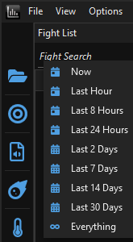

System requirements, dependencies, and first launch.
EQLogParser-Dalaya requires the .NET 8 Desktop Runtime from Microsoft. If you already have it installed (for example, because you have run another .NET 8 app), you can skip this step.
Download the .NET 8 Desktop Runtime (x64) from Microsoft and run the installer:
https://dotnet.microsoft.com/en-us/download/dotnet/8.0
On that page, look for Desktop Runtime under the Windows column and download the x64 installer. Run it and follow the prompts — no configuration is needed.
EQLogParser reads your Dalaya log file in real time. Logging is off by default and must be enabled each session, or set permanently in your Dalaya config.
To enable for the current session: type /log on in the Dalaya chat window.
You will see a confirmation message. Logging stays active until you type /log off or log out.
To enable permanently: open eqclient.ini in your Dalaya install folder
and set Log=TRUE. This enables logging automatically every time Dalaya launches.
Your log file is written to the Logs subfolder of your Dalaya installation. Following the
Dalaya install guide, the client lives at C:\Dalaya, so your log path is:
C:\Dalaya\Logs\eqlog_CharacterName_dalaya.txt
The dalaya portion of the filename is the server identifier for the Dalaya server.
For example, a character named Kateila would have a log file at:
C:\Dalaya\Logs\eqlog_Kateila_dalaya.txtIf you installed the client to a different location, substitute your own install folder above.
Log in to your character before proceeding to Step 4 so the log file already exists on disk when you select it in the parser.
EQLogParser-install-X.Y.Z.exe
Because the installer is not signed with a commercial certificate, Windows may show a
"Windows protected your PC" SmartScreen warning.
Click More info and then Run anyway to proceed.
The installer places the application in C:\Program Files\EQLogParser-Dalaya\
and creates a desktop shortcut.

Logs folder and select the log file
for your character (eqlog_CharacterName_dalaya.txt)
File → Open and Monitor Log File in the menu bar opens the same time-range menu as the sidebar button — use whichever is more convenient. There isn't a separate "load without monitoring" option; picking a wider time range (or Everything) is how you catch fights you were already in.
EQLogParser-Dalaya checks for new releases automatically on startup. When an update is available, a popup asks "Version X.Y.Z is Available. Download and Install?" Click Yes and it downloads the new installer and launches it for you, closing the app to let the install finish — settings and trigger configurations are preserved.